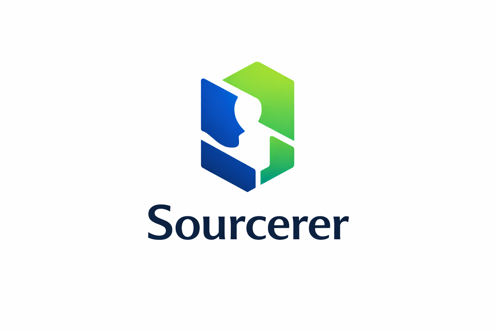

Strategy. Technology. Execution.
Complexity is inevitable. Inefficiency is optional.
Sourcerer is an independent professional services firm operating at the intersection of business strategy, technology and human expertise.
We approach organisations as systems. Every process, decision and resource has a purpose. When those elements fail to work together, performance suffers.
Our work is to identify the friction, challenge assumptions and engineer practical solutions. We do not believe complexity is a measure of sophistication. Clarity is.
Strategy & Growth
Opportunity requires more than ambition. It requires execution.
Enterprise sales, go-to-market strategy, business development and commercial advisory. We help organisations identify opportunities, navigate complex markets and transform strategic intent into measurable business outcomes.
Talent & Operations
Human potential deserves intelligent systems.
Recruitment, talent sourcing, workforce solutions and operational support. We design practical approaches to talent acquisition and business operations, combining human judgement with technology where it creates genuine value. Efficiency should never come at the expense of integrity.
Technology & Security
Technology is a tool. Trust is earned.
AI-assisted workflows, business automation, technology risk awareness and security-conscious operational practices. We examine technology through three questions. Does it solve the problem? Does it introduce unnecessary risk? Can it be implemented responsibly?
Where specialist expertise is required, we work through appropriate delivery partnerships. We do not mistake access to technology for mastery of it.
Observe. Analyse. Execute.
Every engagement begins with understanding the problem rather than prescribing the solution. We examine existing processes, identify weaknesses and determine where intervention creates measurable value.
Our approach is industry agnostic, adaptable and deliberately pragmatic. No unnecessary layers. No complexity for its own sake. No solutions in search of problems.
Progress without purpose is merely motion.
Artificial intelligence, automation and emerging technologies offer extraordinary capabilities. They also introduce new dependencies, vulnerabilities and operational risks. We evaluate both.
Our experience spans enterprise technology, AI-assisted business processes, workflow automation and practical security experimentation. We favour systems that are explainable, maintainable and proportionate to their purpose.
Automation should reduce friction. Intelligence should improve decisions. Security should be integral, not ornamental.
Precision over spectacle.
We operate according to a simple philosophy.
Question assumptions before accepting conclusions.
Apply intelligence where it creates measurable value.
Preserve human accountability in automated systems.
Design for resilience, not merely efficiency.
Treat security and privacy as fundamental requirements.
Prefer the simplest effective solution.
We do not pursue technology because it is fashionable. We pursue outcomes because they matter.
Information has value. Access carries responsibility.
Privacy is not a feature to be enabled after implementation. It is a design principle.
We favour data minimisation, controlled access, responsible handling and deliberate retention practices. Information should be collected for a legitimate purpose, protected appropriately and retained only as necessary.
No unnecessary collection. No exploitation of trust. No compromise of principle for convenience.
We engage with organisations that value independent thinking, practical expertise and responsible execution. If your challenge requires a different perspective, we are ready to examine it. Let's eliminate the unnecessary.